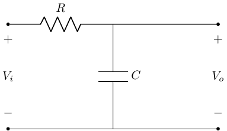
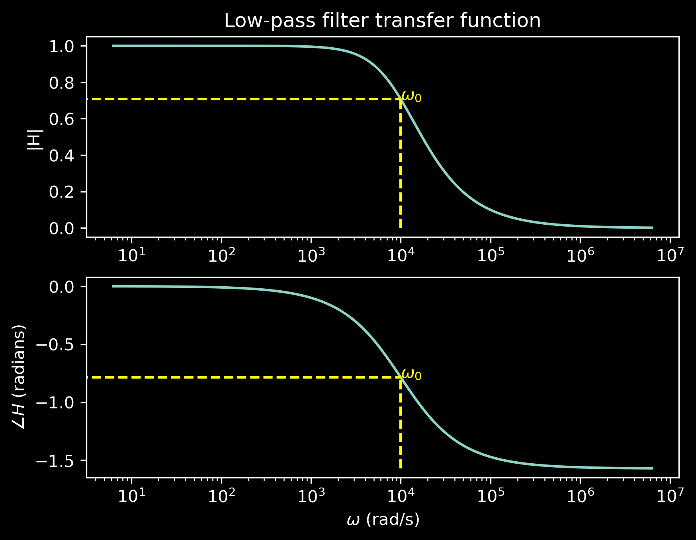
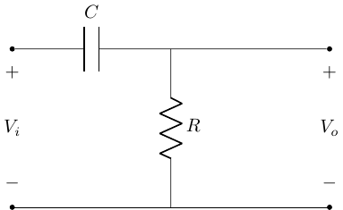
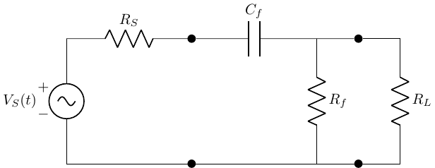
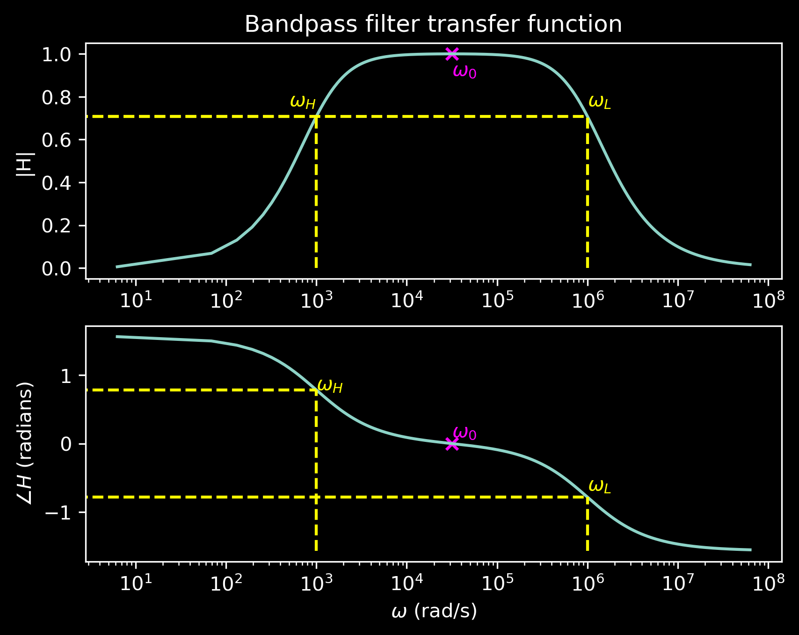

Filters
BME253L - Fall 2025
Duke University
October 6, 2025
Overview
The frequency response of a circuit is a measure of the variation of a load-related voltage/current signal as a function of the frequency content of the source signal.
Goal
Our goal is to evaluate the modulation of an input (voltage) signal by a circuit with frequency-dependent behavior leading to a frequency-dependent output (voltage) signal.
Circuit Block Diagram

Generalized circuit block diagram with a source (input signal), a filter (circuit with frequency-dependent behavior), and a load (output signal).
Transfer Function
A transfer function is a mathematical representation of the relationship between the input and output of a system as a function of frequency.
It describes how a filter modifies the amplitude and phase of the input signal to produce the output signal.
\[ \bar{H}(j\omega) = \frac{\bar{V}_{out}(j\omega)}{\bar{V}_{in}(j\omega)} \]
Complex quantity
Dimensionless
Function of frequency (\(\omega\))
Interpretting a Transfer Function
- \(\bar{V}_{L}(j\omega)\) will be an amplitude-modulated and phase-modulated version of \(\bar{V}_{S}(j\omega)\).
\[ \begin{gather} V_{L} e^{j\phi_L} = |H|e^{j\angle H} V_{S} e^{j\phi_S} = |H| V_{S} e^{j(\phi_S + \angle H)} \\ V_{L} = |H| V_{S} \\ \phi_L = \angle H + \phi_S \end{gather} \]
Example: FM Radio
Input/Source: all the stations broadcast span a wide range of frequencies in the FM band (88-108 MHz).
Desired Output/Load: a single station (e.g., 101.1 MHz).
Draw:
Input signal: multiple frequencies
Output signal: single frequency
Transfer function: band-pass filter centered at 101.1 MHz
Example: Audio Equalizer
Input/Source: music signal with a wide range of frequencies (bass, midrange, treble).
Desired Output/Load: enhanced bass and treble frequencies.
Draw:
Input signal: full spectrum
Output signal: enhanced bass and treble
Transfer functions: low-pass and high-pass filters
How to Design a Low-Pass Filter (LPF)
Let‚Äôs inspect the frequency response (transfer function) of this circuit‚Ķ
\[ V_o = V_i \frac{\frac{1}{j\omega C}}{R + \frac{1}{j \omega C}} \\ \]
How did I get this expression?
Solve for Transfer Function
\[ \frac{V_o}{V_i} = \frac{1}{1 + j\omega RC} \\ \]
Convert to polar form to get magnitude and phase:
\[ \begin{gather} |\bar{H}(j\omega)| = \frac{1}{\sqrt{1 + (\omega RC)^2}} \\ \angle \bar{H}(j\omega) = -\tan^{-1}(\omega RC) \\ \end{gather} \]
Does this make sense?
Let’s test some different frequencies to see what the transfer function tells us…
- At \(\omega = 0\) (DC):
\[ \begin{gather} |\bar{H}(j0)| = 1 \\ \angle \bar{H}(j0) = 0^\circ \\ \end{gather} \]
That means that at DC, the output voltage is equal to the input voltage (no attenuation, no phase shift): \(V_o = V_i\). The capacitor is effectively an open circuit at DC.

- At \(\omega = \infty\):
\[ \begin{gather} |\bar{H}(j\infty)| = 0 \\ \angle \bar{H}(j\infty) = -90^\circ \\ \end{gather} \]
That means that at high frequencies, the output voltage is zero (completely attenuated) and the phase shift is -90 degrees: \(V_o = 0\). The capacitor is effectively a short circuit at high frequencies.

Complete Transfer Function
Note the logarithmic scale on the x-axis (frequency).
\(\omega_o\) is a characterisitic “cutoff” frequency that conveys information about the frequency response of the circuit.
\(V_o\) is at half power of \(V_i\) (\(|H| = 1/\sqrt{2}\)), which is attenuated by -3 dB (\(20 \log_{10}(1/\sqrt{2}) \approx -3\) dB).
The phase shift is -45 degrees (half of the total -90 degree shift).
Less-attenuated frequencies \(< \omega_o\) are in the passband.
More-attenuated frequencies \(> \omega_o\) are in the stopband.
How is \(\omega_o\) related to \(R\) and \(C\)?
- \(\omega_o\) is defined as the half-power point of the transfer function magnitude:
\[ \begin{gather} |\bar{H}(j\omega_o)| = \frac{1}{\sqrt{2}} = \frac{1}{\sqrt{1 + (\omega_o RC)^2}} \\ \omega_o = \frac{1}{RC} \end{gather} \]
Important
We can “tune” the frequency response of the filter by changing the values of \(R\) and \(C\)!
- At \(\omega_o\), \(\angle \bar{H}(j\omega_o) = -\tan^{-1}(1) = -45^\circ = -\frac{\pi}{4}\).
How to Design a High-Pass Filter (HPF)
For \(\omega = 0\) (DC), the capacitor is an open circuit, so \(V_o = 0\).
For \(\omega = \infty\), the capacitor is a short circuit, so \(V_o = V_i\).
Higher frequency voltages are passed to the output, while lower frequency voltages are attenuated (taken up by the capacitor).
HPF Transfer Function
\[ \begin{gather} V_o(j\omega) = V_i(j\omega) \frac{R}{R + \frac{1}{j\omega C}} \\ H(j\omega) = \frac{j\omega RC}{1 + j\omega RC} \\ H(j\omega) = \frac{\omega RC}{\sqrt{1 + (\omega RC)^2}} \frac{\angle \frac{\pi}{2}}{\angle \tan^{-1}(\omega RC)} \\ |H(j\omega)| = \frac{\omega RC}{\sqrt{1 + (\omega RC)^2}} \\ \angle H(j\omega) = \frac{\pi}{2} - \tan^{-1}(\omega RC) \\ \end{gather} \]
What is the cutoff frequency?
Assume \(|H(j\omega)|_{max} = 1\) at \(\omega = \infty\).
\[ \begin{gather} |H(j\omega)| = \frac{|H(j\omega)|_{max}}{\sqrt{2}} \\ \frac{1}{\sqrt{2}} = \frac{\omega_o RC}{\sqrt{1 + (\omega_o RC)^2}} \\ \end{gather} \]
Important
\[ \omega_o = \frac{1}{RC} \\ \]
HPF Transfer Function Plot

The passband is now frequencies \(>\omega_o\).
The stopband is now frequencies \(<\omega_o\).
SPICE Simulation of Filters
In class demo…
Input & Output Impedance
Now that we are developing filters to modulate source signals to deliver to an attached load, we need to consider the impedances of the source, filter, and load.
The input impedance of the filter is the impedance “seen” by the source.
The output impedance of the filter is the impedance “seen” by the load.
Example Circuit
This can be considered a 3-stage circuit:
Source with internal impedance \(Z_S\).
Filter with input impedance \(Z_{in}\) and output impedance \(Z_{out}\).
Load with impedance \(Z_L\).
What does the impedance of the filter look like to the source?
Remove the impedance of the load by replacing it with an open circuit.
Calculate the equivalent impedance of the filter that affects the current from the source.

This is the input impedance of the filter, \(Z_{in}\).
\(Z_{in} = Z_f = Z_{C_f} + Z_{R_f}\) (as “seen” by the source)
\(Z_{in} = \frac{V_{in}}{I_{in}}\)
Input Impedance Considerations
Important
If \(Z_{in} >> Z_L\), then the attached load will not affect the operation of the filter.
This means that we can cascade multiple filter stages without the load of one stage affecting the operation of the previous stage.
What does the impedance of the filter look like to the load?
- The output impedance of the filter, \(Z_{out}\), is defined as:
\[ Z_{out} = \frac{V_{oc}}{I_{sc}} \]
This is the Thevenin/Norton equivalent impedance “seen” by the load (which includes the source):
\[ \begin{gather} Z_{out} = {Z_{in}}_T \\ Z_{out} = Z_{R_f} || (Z_{R_S} + Z_{C_f}) \\ \end{gather} \]
Important
Note that \(Z_{in} \neq Z_{out}\)!
We can measure input and output impedance experimentally in the lab too.
Bandpass Filter (Second-Order, RLC)

Tip
This, again, just looks like a voltage divider!
Cutoff Frequencies
This is a second-order filter (two energy storage elements: \(L\) and \(C\)), so it has two cutoff frequencies: \(\omega_H\) and \(\omega_L\).
\[ \begin{gather} H(j\omega) = \frac{V_o(j\omega)}{V_i(j\omega)} = \frac{R}{R + \frac{1}{j\omega C} + j\omega L} \\ H(j\omega) = \frac{j\omega RC}{1 + j\omega RC - \omega^2 LC} \\ \end{gather} \]
Characteristic Frequencies
The bandwidth \(\Delta \omega\) is the difference between the upper and lower cutoff frequencies: \(\Delta \omega = \omega_H - \omega_L\).
The resonant frequency \(\omega_0\) is the frequency at which the inductive and capacitive reactances are equal in magnitude:
\[ \begin{gather} \omega_0 = \frac{1}{\sqrt{LC}} \\ \end{gather} \]
- The resonant frequency is the geometric mean of the cutoff frequencies.
Calculating Cutoff Frequencies
There are two points at which the power is half of the maximum power (or \(|H| = 1/\sqrt{2}\)):
\[ \omega_{L,H} = \pm \frac{R}{2L} + \sqrt{\left(\frac{R}{2L}\right)^2 + \frac{1}{LC}} \\ \]
Note
Note that you can view the bandpass filter as a cascade of a high-pass filter (formed by \(C\) and \(R\)) and a low-pass filter (formed by \(L\) and \(R\)), leading to a high- and low-frequency cutoff.
Quality Factor
How “sharp” is the peak of the bandpass filter?
The quality factor \(Q\) is defined as:
\[ Q = \frac{\omega_0}{\Delta \omega} = \frac{\omega_0}{\omega_H - \omega_L} = \frac{1}{R} \sqrt{\frac{L}{C}} \\ \]
A higher \(Q\) indicates a sharper peak and a narrower bandwidth.
Damping Factor
The damping factor \(\zeta\) is defined as:
\[ \zeta = \frac{1}{2Q} = \frac{R}{2} \sqrt{\frac{C}{L}} \\ \] It is a measure of how quickly oscillations in the system decay outside the passband.
Bode Plots
Can we sketch transfer functions quickly without having to plot the exact function?
Yes! Bode plots provide a way to visualize the frequency response of a system using logarithmic scales for frequency and gain.
Key Features of Bode Plots
- Magnitude Plot: Shows the gain (in dB) versus frequency (in log scale).
- Phase Plot: Shows the phase shift (in radians or degrees) versus frequency (in log scale).
Steps to Create a Bode Plot
- Identify Key Frequencies: Find the cutoff frequencies and any resonant frequencies.
- Determine Asymptotic Behavior: Sketch the magnitude and phase plots using straight lines that approximate the behavior of the transfer function.
- Add Details: Include any peaking or notches in the response.
Decibel (dB) Scale
Decibel is a logarithmic unit used to express the ratio of two values, commonly power or intensity.
The formula to convert a power ratio to decibels is:
\[ L_{dB} = 10 \log_{10} \left( \frac{P}{P_0} \right) \]
where: - \(L_{dB}\) is the level in decibels, - \(P\) is the power being measured, - \(P_0\) is a reference power level.
Decibel Voltage Gain
For voltage gain, the formula is: \[ \left|\frac{V_{out}}{V_{in}}\right|_{dB} = 20 \log_{10} \left( \frac{V_{out}}{V_{in}} \right) \]
Why 20 and not 10?
Because power is proportional to the square of voltage (P ∝ V²), the factor of 20 accounts for this relationship when converting voltage ratios to decibels.
Why decibels?
Allows a large dynamic range of signal levels to be represented in a “reasonable” linear range.
Example: hearing/sound intensity
Whisper: 0.00001 W/m² = -50 dB
Explosion: 100 W/m² = 100 dB
Exponential changes in power correspond to linear changes in dB, which is how our filters behave. We experience logarithmic changes in voltage as a function of decades of frequency change.
Example: First-Order Low-Pass Filter
For a first-order low-pass filter, the Bode plot would show:
\[ \begin{align} \left|\frac{V_{out}}{V_{in}}\right|_{dB} & = -20 \log_{10} \left( \frac{1}{\sqrt{1 + \left( \frac{\omega}{\omega_c} \right)^2}} \right) \\ & = 20 \log_{10}(1) - 10 \log_{10}\left(1 + \left(\frac{\omega}{\omega_c}\right)^2\right) \\ & = -10 \log_{10}\left(1 + \left(\frac{\omega}{\omega_c}\right)^2\right) \\ \end{align} \]
For \(\frac{\omega}{\omega_c} << 1\), the gain is approximately \(-10 \log_{10}(1)\) = 0 dB (no attenuation).
For \(\frac{\omega}{\omega_c} >> 1\), the gain is approximately \(-10 \log_{10}((\frac{\omega}{\omega_c})^2)\) = -20 log₁₀(ω/ω_c) dB (attenuation increases with frequency).
A -20 dB/decade slope after the cutoff frequency.
A phase shift that approaches -\(\frac{\pi}{2}\) at high frequencies.
At the cutoff frequency (\(\omega = \omega_c\)):
The gain is -3 dB, and
The phase shift is -\(\frac{\pi}{4}\).
Drawing a Bode Plot (Magnitude)
We simplify the transfer function into segments that are easy to plot, which intersect at the cutoff frequency.
The slope of the magnitude plot changes at the cutoff frequency.
Drawing a Bode Plot (Phase)
\(\frac{\omega}{\omega_c} << 1\): phase is approximately 0.
\(\frac{\omega}{\omega_c} >> 1\): phase is approximately -\(\frac{\pi}{2}\).
\(\omega = \omega_c\): phase is -\(\frac{\pi}{4}\).
Approximate the phase transition as linear over two decades centered at the cutoff frequency.
What does the Bode Plot of a First-Order High-Pass Filter Look Like?
You tell me!
Summary for Generating Bode Plots
Solve for \(|H(j\omega)|\) and \(\angle H(j\omega)\).
Determine the cutoff frequency \(\omega_c\).
Evaluate \(|H(j\omega)|\) and \(\angle H(j\omega)\) at “extreme” frequencies (\(\omega << \omega_c\) and \(\omega >> \omega_c\)).
Sketch the magnitude and phase plots using straight lines that approximate the behavior of the transfer function, intersecting at \(\omega_c\).
For first-order filters, the slope of the magnitude plot changes by ±20 dB/decade at the cutoff frequency.
For first-order filters, the phase plot transitions from 0 to ±\(\frac{\pi}{2}\) degrees over two decades centered at the cutoff frequency.